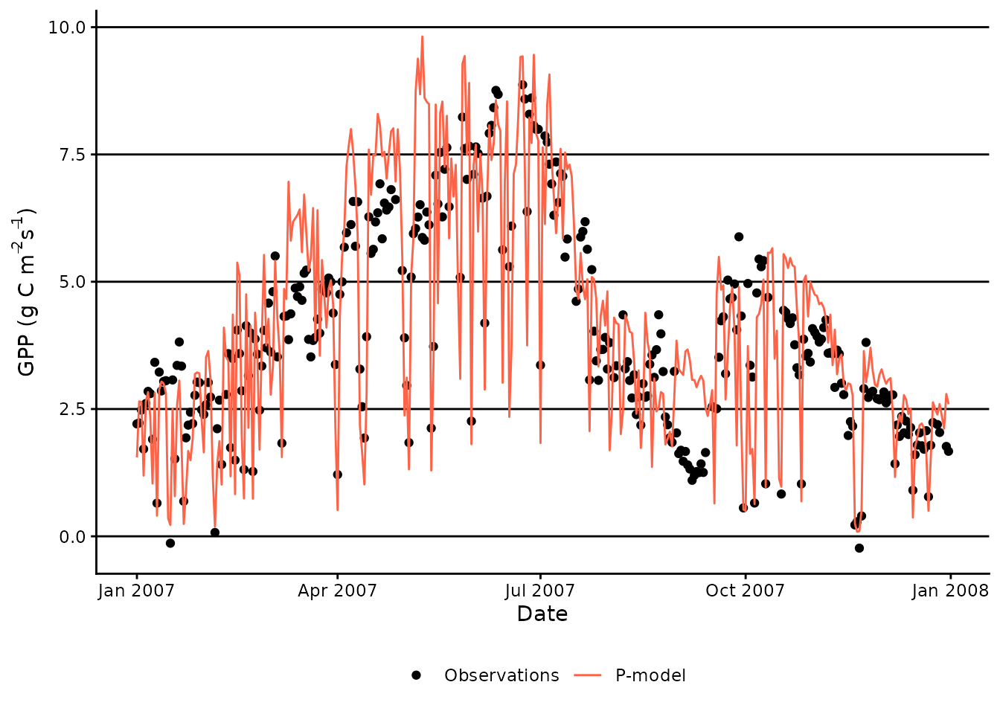

P-model usage
Koen Hufkens, Josefa Arán, Benjamin Stocker
Source:vignettes/pmodel_use.Rmd
pmodel_use.RmdThe rsofun package and framework includes two distinct
simulation models. The p-model and biomee
(which in part relies on p-model component). Here we give a short
example on how to run the p-model on the included demo
datasets to familiarize yourself with both the data structure and the
outputs.
Demo data
The package includes two demo datasets to run and validate p-model output using GPP observations. These files can be directly loaded into your workspace by typing:
library(rsofun)
# this is to deal with an error p_model_drivers.rds not being found
p_model_drivers
#> # A tibble: 1 × 4
#> sitename params_siml site_info forcing
#> <chr> <list> <list> <list>
#> 1 FR-Pue <tibble [1 × 11]> <tibble [1 × 4]> <tibble [2,190 × 13]>
p_model_validation
#> # A tibble: 1 × 2
#> sitename data
#> <chr> <list>
#> 1 FR-Pue <tibble [2,190 × 3]>These are real data from the French FR-Pue fluxnet site. Information
about data structure, variable names, and their meaning and units can be
found in the reference pages of p_model_drivers and
p_model_validation. We can use these data to run the model,
together with observations of GPP we can also calibrate
p-model parameters.
Another two datasets are provided as an example to validate the model
against leaf traits data, rather than fluxes. Measurements of Vcmax25
(aggregated over species) for a subset of 4 sites from the GlobResp
database (Atkin et al., 2015) are given in
p_model_validation_vcmax25 and the corresponding forcing
for the P-model is given in p_model_drivers_vcmax25. Since
leaf traits are only measured once per site, the forcing used is a
single year of average climate (the average measurements between 2001
and 2015 on each day of the year).
p_model_drivers_vcmax25
#> # A tibble: 4 × 4
#> sitename params_siml site_info forcing
#> <chr> <list> <list> <list>
#> 1 Reichetal_Colorado <tibble [1 × 11]> <tibble [1 × 6]> <tibble [365 × 13]>
#> 2 Reichetal_New_Mexico <tibble [1 × 11]> <tibble [1 × 6]> <tibble [365 × 13]>
#> 3 Reichetal_Venezuela <tibble [1 × 11]> <tibble [1 × 6]> <tibble [365 × 13]>
#> 4 Reichetal_Wisconsin <tibble [1 × 11]> <tibble [1 × 6]> <tibble [365 × 13]>
p_model_validation_vcmax25
#> # A tibble: 4 × 2
#> # Groups: sitename [4]
#> sitename data
#> <chr> <list>
#> 1 Reichetal_Colorado <tibble [1 × 2]>
#> 2 Reichetal_New_Mexico <tibble [1 × 2]>
#> 3 Reichetal_Venezuela <tibble [1 × 2]>
#> 4 Reichetal_Wisconsin <tibble [1 × 2]>For the remainder of this vignette, we will use the GPP flux datasets. The workflow is exactly the same for leaf traits data.
To get your raw data into the structure used within
rsofun, please see R packages ingestr and FluxDataKit.
Running model
With all data prepared we can run the P-model using
runread_pmodel_f(). This function takes the nested data
structure and runs the model site by site, returning nested model output
results matching the input drivers.
# Define model parameter values.
# Correspond to maximum a posteriori estimates from Bayesian calibration in
# analysis/02-bayesian-calibration.R.
params_modl <- list(
kphio = 5.000000e-02, # chosen to be too high for demonstration
kphio_par_a =-2.289344e-03,
kphio_par_b = 1.525094e+01,
soilm_thetastar = 1.577507e+02,
soilm_betao = 1.169702e-04,
beta_unitcostratio = 146.0,
rd_to_vcmax = 0.014,
tau_acclim = 20.0,
kc_jmax = 0.41
)
# Run the model for these parameters.
output <- rsofun::runread_pmodel_f(
p_model_drivers,
par = params_modl
)Plotting output
We can now visualize both the model output and the measured values together.
# Load libraries for plotting
library(dplyr)
library(tidyr)
library(ggplot2)
# Create data.frame for plotting
df_gpp_plot <- output |>
tidyr::unnest(data) |>
dplyr::select(date, gpp_mod = gpp) |>
dplyr::left_join(
p_model_validation |>
tidyr::unnest(data) |>
dplyr::select(date, gpp_obs = gpp),
by = "date"
) |>
# Plot only first year
dplyr::slice(1:365)
# Plot GPP
ggplot(data = df_gpp_plot) +
geom_point(
aes(
x = date,
y = gpp_obs,
color = "Observations"
),
) +
geom_line(
aes(
x = date,
y = gpp_mod,
color = "P-model"
)
) +
theme_classic() +
theme(
panel.grid.major.y = element_line(),
legend.position = "bottom"
) +
labs(
x = 'Date',
y = expression(paste("GPP (g C m"^-2, "s"^-1, ")"))
) +
scale_color_manual(
NULL,
breaks = c("Observations",
"P-model"),
values = c("black", "tomato"))
#> Warning: Removed 42 rows containing missing values or values outside the scale range
#> (`geom_point()`).
Calibrating model parameters
To optimize new parameters based upon driver data and a validation dataset we must first specify an optimization strategy and settings, as well as a cost function and parameter ranges.
settings <- list(
method = "GenSA",
metric = cost_rmse_pmodel,
control = list(maxit = 100),
par = list(
kphio = list(lower=0.02, upper=0.2, init = 0.05)
)
)rsofun supports both optimization using the
GenSA and BayesianTools packages. The above
statement provides settings for a GenSA optimization
approach. For this example the maximum number of iterations is kept
artificially low. In a real scenario you will have to increase this
value orders of magnitude. Keep in mind that optimization routines rely
on a cost function, which, depending on its structure influences
parameter selection. A limited set of cost functions is provided but the
model structure is transparent and custom cost functions can be easily
written. More details can be found in the “Parameter calibration and
cost functions” vignette.
In addition starting values and ranges are provided for the free
parameters in the model. Free parameters include: parameters for the
quantum yield efficiency kphio, kphio_par_a
and kphio_par_b, soil moisture stress parameters
soilm_thetastar and soilm_betao, and also
beta_unitcostratio, rd_to_vcmax,
tau_acclim and kc_jmax (see
?runread_pmodel_f). Be mindful that with newer versions of
rsofun additional parameters might be introduced, so
re-check vignettes and function documentation when updating existing
code.
With all settings defined the optimization function
calib_sofun() can be called with driver data and
observations specified. Extra arguments for the cost function (like what
variable should be used as target to compute the root mean squared error
(RMSE) and previous values for the parameters that aren’t calibrated,
which are needed to run the P-model).
# calibrate the model and optimize free parameters
pars <- calib_sofun(
drivers = p_model_drivers,
obs = p_model_validation,
settings = settings,
# extra arguments passed to the cost function:
targets = "gpp", # define target variable GPP
par_fixed = params_modl[-1] # fix non-calibrated parameters to previous
# values, removing kphio
)When successful the optimized parameters can be used to run subsequent modelling efforts, in this case slightly improving the model fit over a more global parameter set.
# Update the parameter list with calibrated value
params_modl$kphio <- pars$par["kphio"]
# Run the model for these parameters
output_new <- rsofun::runread_pmodel_f(
p_model_drivers,
par = params_modl
)
# Update data.frame for plotting
df_gpp_plot <- df_gpp_plot |>
left_join(
output_new |>
unnest(data) |>
select(date, gpp_calib = gpp),
by = "date"
)
# Plot GPP
ggplot(data = df_gpp_plot) +
geom_point(
aes(
x = date,
y = gpp_obs,
color = "Observations"
),
) +
geom_line(
aes(
x = date,
y = gpp_mod,
color = "P-model (uncalibrated)"
)
) +
geom_line(
aes(
x = date,
y = gpp_calib,
color = "P-model (calibrated)"
)
) +
theme_classic() +
theme(
panel.grid.major.y = element_line(),
legend.position = "bottom"
) +
labs(
x = 'Date',
y = expression(paste("GPP (g C m"^-2, "s"^-1, ")"))
) +
scale_color_manual(
NULL,
breaks = c("Observations",
"P-model (uncalibrated)",
"P-model (calibrated)"),
values = c("black", "grey", "tomato"))
#> Warning: Removed 42 rows containing missing values or values outside the scale range
#> (`geom_point()`).
For details on the optimization settings we refer to the manuals of GenSA and BayesianTools.